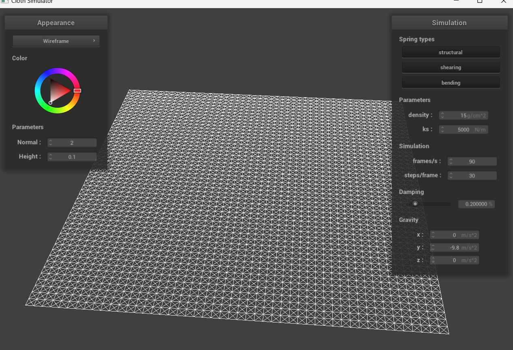

CS184/284A Spring 2025 Homework 4 Write-Up
Link to webpage: cal-cs184-student.github.io/cs284a-hw-webpages-jasper/
Link to GitHub repository: github.com/cal-cs184-student/cs284a-hw-webpages-jasper
Project Overview
In this project, I implemented a comprehensive cloth simulation system that models the physics of fabric through mass-spring systems. Starting with the basic structure of interconnected masses, I developed progressively more complex behaviors including physics-based simulation, collision detection with external objects, self-collision handling, and advanced rendering techniques through custom shaders.
The simulation accurately captures various fabric properties by manipulating parameters like spring stiffness, density, and damping. Through careful implementation of collision detection and resolution algorithms, the cloth realistically interacts with spheres, planes, and itself. Finally, the rendering component demonstrates how modern graphics techniques like Blinn-Phong shading, texture mapping, bump mapping, displacement mapping, and environment reflection can create visually compelling cloth representations with different material properties.
Part 1: Masses and Springs
In this part, I implemented a cloth simulation using a system of point masses and springs. The implementation creates a grid of masses connected by three types of springs: structural constraints (connecting adjacent masses), shearing constraints (connecting diagonal masses), and bending constraints (connecting masses that are two positions apart).
|

|

|
|
|
|
|
|
Part 2: Simulation Parameters
In this part, I implemented physical forces and Verlet integration to simulate cloth dynamics. The implementation includes external forces (like gravity), spring forces based on Hooke's law, and position constraints to prevent excessive deformation. I experimented with different simulation parameters to observe their effects on cloth behavior.
Spring Constant (ks)
The spring constant affects the stiffness of the cloth. With a low spring constant (ks = 10), the cloth behaves more like a soft, droopy fabric such as silk. It stretches significantly under its own weight and settles slowly with visible waves. With a high spring constant (ks = 100000), the cloth behaves more like a stiff material such as canvas. It maintains its shape better, shows less stretching, and settles quickly with minimal deformation.
|
|
|
Density
Density determines the mass of the cloth, affecting how it responds to forces. With a low density (density = 5), the cloth behaves like a lightweight material. It settles quickly and is more responsive to external forces like wind. With a high density (density = 1000), the cloth behaves like a heavy material. It falls faster due to greater weight, creates more pronounced folds, and is more resistant to movement once settled.
|
|
|
Damping
Damping controls how quickly the cloth loses energy during movement. With high damping (damping = 1%), the cloth oscillates for a long time before coming to rest, similar to an elastic material with little internal friction. With low damping (damping = 0.1%), the cloth quickly settles into position with minimal bouncing, behaving more like a material with high internal friction.
Final Resting State
Below is the final resting state of the cloth from scene/pinned4.json. For this rendering, I used the default parameters (ks = 5000, density = 15, damping = 0.2%).
Part 3: Collisions
In this part, I implemented collision handling between the cloth and external objects like spheres and planes. The implementation detects when point masses intersect with or cross object boundaries and adjusts their positions accordingly to prevent penetration.
Collision Implementation
For sphere collisions, I check if a point mass is inside the sphere by comparing the distance between the point mass and the sphere's center with the sphere's radius. If the point is inside, I calculate a correction vector that moves the point to the sphere's surface along the line from the sphere's center to the point. This correction is then applied to the point's position, scaled by a friction factor to simulate the friction between the cloth and the sphere.
For plane collisions, I detect when a point mass crosses from one side of the plane to the other by checking the sign of the dot product between the point-to-plane vector and the plane's normal. When a crossing is detected, I calculate the intersection point along the line segment from the point's previous position to its current position, then place the point slightly above the plane on its original side. Like with spheres, the correction is scaled by friction.
Sphere Collision with Different Spring Constants
The spring constant significantly affects how the cloth drapes over the sphere. Below are results with three different spring constants:
|
|
|
|
|
|
With a low spring constant (ks = 500), the cloth is very soft and drapes closely around the sphere, creating many folds and wrinkles as it conforms to the spherical shape. The cloth stretches significantly under its own weight.
With the default spring constant (ks = 5000), the cloth maintains some structure while still adapting to the sphere's shape.
With a high spring constant (ks = 50000), the cloth behaves like a stiff material, barely deforming from its original shape. It touches the sphere but maintains a tent-like structure over it instead of conforming to the sphere's contours.
Plane Collision
Below is the cloth at rest on a plane.
Part 4: Self-Collisions
In this part, I implemented self-collision detection and resolution for the cloth simulation. This allows the cloth to interact with itself realistically when it folds, preventing different parts of the cloth from passing through each other.
Self-Collision Implementation
My implementation uses spatial hashing to efficiently detect potential collisions between point masses. The system divides 3D space into grid cells and maps each point mass to a cell based on its position.
The implementation consists of three main components:
- A hash function that maps a 3D position to a unique identifier representing a specific grid cell
- A spatial map that stores point masses organized by their grid cell
- A collision resolution function that detects when point masses are too close and calculates correction vectors
When point masses come within twice the cloth thickness of each other, a correction force is applied to push them apart. This ensures that the cloth maintains a minimum separation distance between different layers, creating realistic folds and preventing interpenetration.
Cloth Self-Collision Sequence
Below is a sequence showing how the cloth folds and collides with itself as it falls:
|
|
|
|
|
|
Effect of Varying Parameters on Self-Collisions
The simulation parameters significantly affect how the cloth behaves when colliding with itself:
Varying Spring Constant (ks)
|
|
|
With a low spring constant (ks = 500), the cloth creates many small, detailed folds when it collides with itself. The fabric appears more fluid-like.
With a high spring constant (ks = 50000), the cloth forms fewer, larger folds. It maintains its shape much more rigidly, creating tent-like structures.
Varying Density
|
|
|
With low density (5), the cloth falls slowly and makes soft, wide folds that spread out more on the ground. It looks puffy and takes up more space, like a light scarf.
With high density (100), the cloth falls quickly and makes tight, narrow folds that stay closer together. It makes a smaller, more compact pile with sharper creases, like a heavy blanket.
Part 5: Shaders
What is a Shader Program?
A shader program is a small piece of code that runs on the GPU rather than the CPU. It controls how 3D objects appear on screen by determining their shape, color, lighting, and texture. Shaders work in a pipeline where data flows from one stage to the next.
Vertex shaders run first and work on individual points (vertices) of a 3D model. They calculate where each point should appear on screen and pass information like position, normal direction, and texture coordinates to the next stage. Fragment shaders run later and determine the final color of each pixel. They use the information from vertex shaders along with lighting and texture data to create the final look. Together, these shaders create all the visual effects we see in 3D graphics.
The Blinn-Phong Shading Model
The Blinn-Phong model creates realistic lighting by combining three components:
- Ambient lighting: A constant base level of light that illuminates all surfaces equally, simulating indirect light that bounces around a scene
- Diffuse lighting: Light that scatters equally in all directions when it hits a surface, creating the basic shape and shading of objects
- Specular lighting: Bright highlights that appear on shiny surfaces, simulating direct reflections of light sources
These components are added together to create the final color of each point on an object. By adjusting the strength of each component, we can create materials ranging from dull clay to shiny metal.
|
|

|
|
|
|
||
Texture Mapping
Below are screenshots showing the cloth with my custom texture applied.
Bump and Displacement Mapping
Bump mapping and displacement mapping are techniques to add surface detail without increasing geometric complexity:
- Bump mapping fakes surface detail by altering the surface normals to affect lighting calculations, but doesn't actually change the geometry
- Displacement mapping physically moves vertices to create real geometric detail based on a height map
|
|
|
|
|

|
The bump-mapped sphere (top right) looks textured, but still has a perfectly round outline. The pattern shows up as light and dark areas, but the ball stays smooth. The displacement-mapped sphere (bottom right) has real bumps and dips that change its shape. You can see the outline isn't smooth anymore - it has visible ridges sticking out. On the cloth (left pictures), displacement mapping makes actual folds that change how the cloth hangs, while bump mapping just makes it look textured without changing its shape.
When using a coarse mesh (-o 16 -a 16), displacement mapping shows blocky, low-resolution details because there aren't enough vertices to create smooth displacement. Bump mapping looks better on coarse meshes since it doesn't depend on vertex density. With a fine mesh (-o 128 -a 128), displacement mapping creates much smoother, more detailed results that match the detail level of the height map.
Mirror Shader
The mirror shader creates reflective surfaces by calculating how rays bounce off the object and sampling an environment map in those reflection directions. This creates the illusion that the object is reflecting its surroundings.
|
|
|